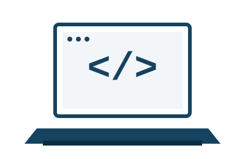

Purpose of This Site
This site was created for COP4813 (Web Programming) at Daytona State College. It serves two purposes: it is the home for the assignments I complete throughout the course, and it is a working example of my ability to build clean, accessible, standards-compliant web pages. Each assignment link on this site will be kept up to date as the semester progresses.
About Me

I'm a Bachelor of Science in Information Technology (BSIT) student at Daytona State College. My coursework spans database management and database programming, human–computer interaction, computer networking, cybersecurity, and software engineering, and this course is adding web programming to that foundation.
My goal is to build a career in software and web development. I'm using courses like this one to develop practical, portfolio-ready skills — from front-end markup and styling to the database and systems knowledge that sits behind a real application.
Technical Skills
HTML, CSS, SQL, and Python, with a hands-on Git/GitHub workflow.
Coursework
See the My Classes page for the full list of courses I'm currently taking, and My Assignments for the work I've published from this class.